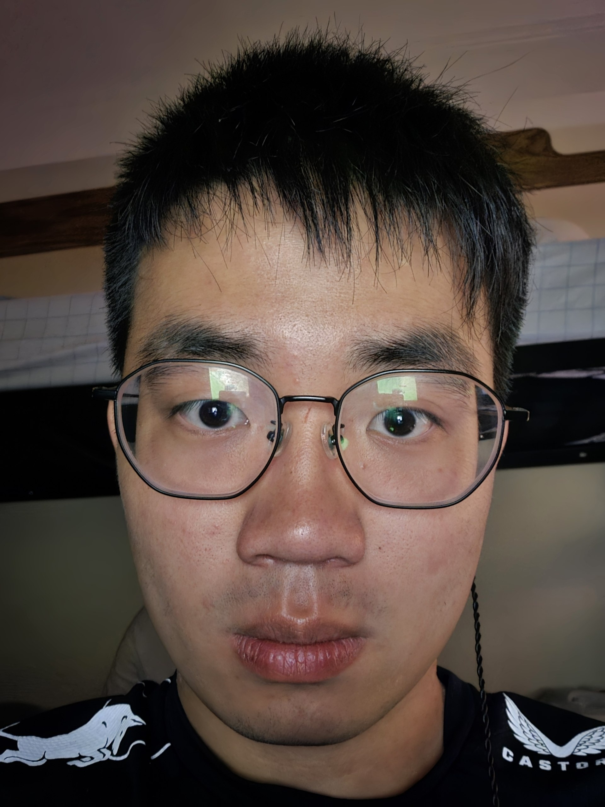
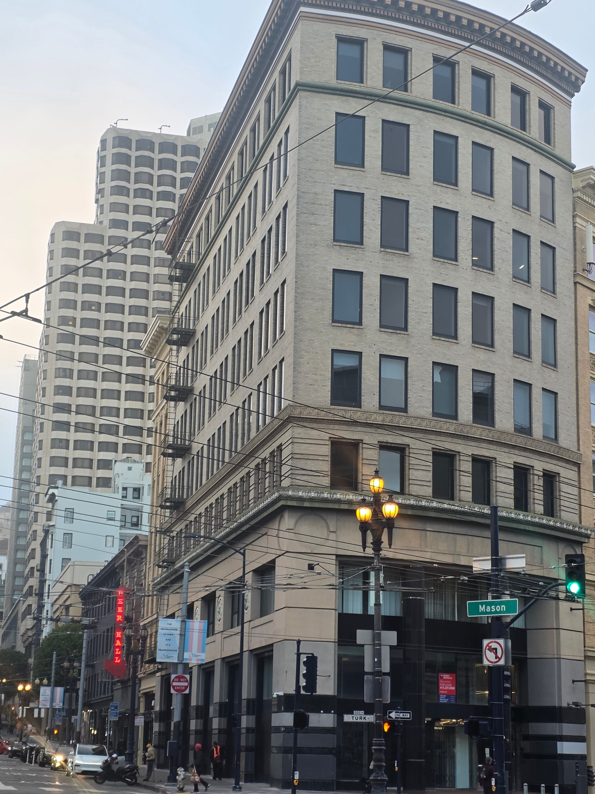
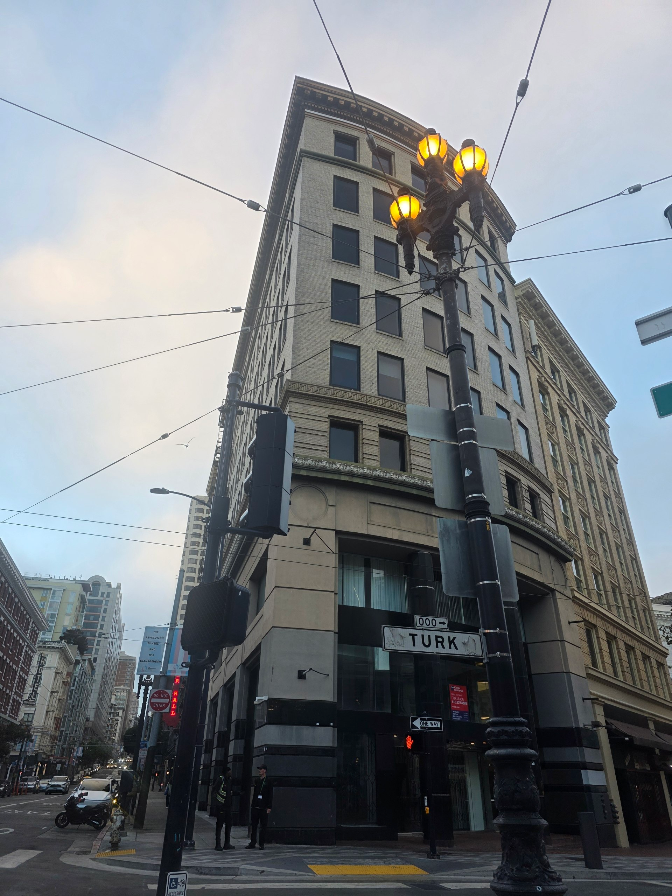
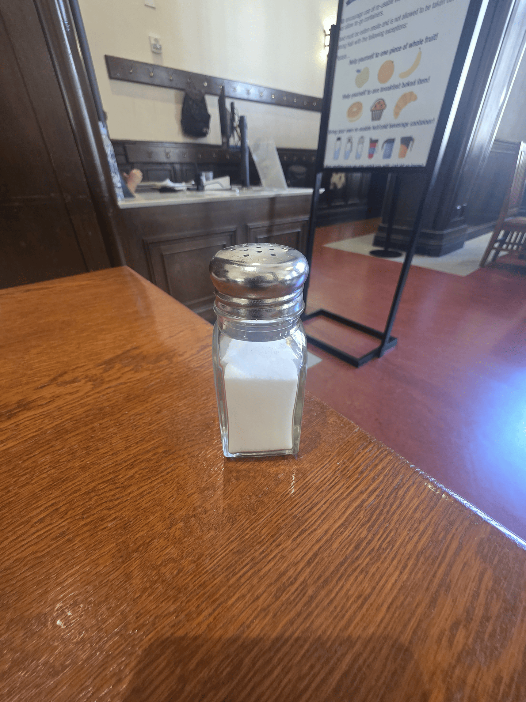
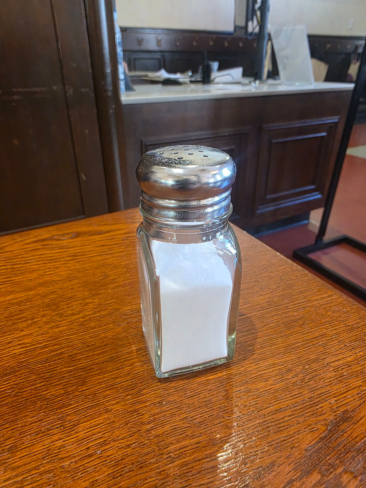
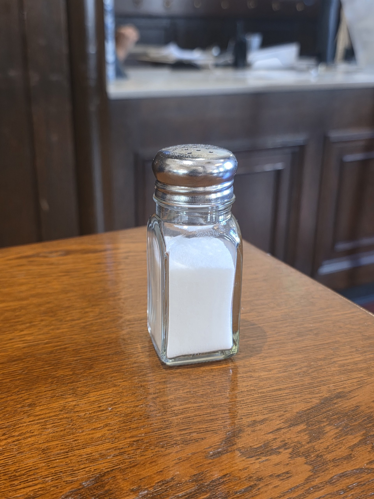
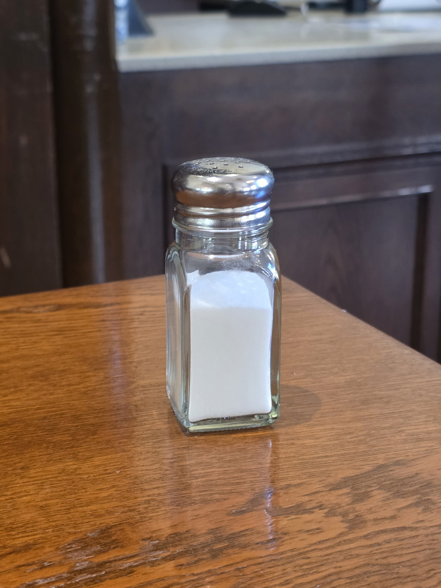
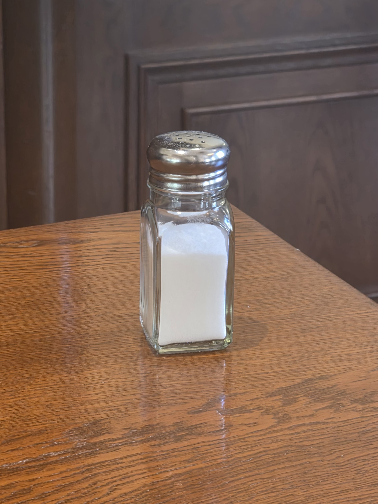
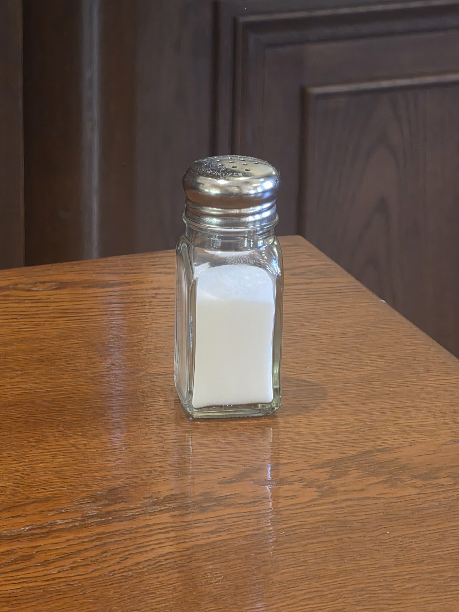

CS180 Project 0 · Tan Ee Khai
Write a short intro here describing what you set out to explore and how you shot the photos below.
Same subject, same apparent face size, two very different centers of projection.

I have no idea why this is the case, but some searches online suggest it has to do with distance from the camera. Since image size is inverse to the distance, the nose will render larger when the camera is closer. Comparing my nose to my ears, when the camera is close, the nose appears much larger relative to the ears. Everything near the front of the face including my nose looks enlarged compared to my jawline, ears and face shape. At a larger distance, the ratio is much lower compared to the camera distance.
The same idea in reverse, on a building facade shot at an angle.


I think the zoomed shot looks flattened because the camera is farther away and zoomed in, which compresses the perspective of the building facade, similar to the effect in part 1.
A note on my shots: I don't think I took this pair correctly. For the close photo I tilted the camera upward, so the dominant effect is the vertical lines converging toward the top of the building rather than the horizontal compression of the facade that this part is about.
Moving the camera back while zooming in — the subject holds its size while the background rushes toward or away from it.

The individual frames:





I used a pepper as the subject for the dolly zoom effect. I moved the camera back while zooming in to create the effect, though there were significant challenges in maintaining the same perspective and size throughout the shots, a grid line proved helpful.
I never took into account these proportions and the math behind it when taking a photographs and selfies. I learnt how to take better photos of myself. XD